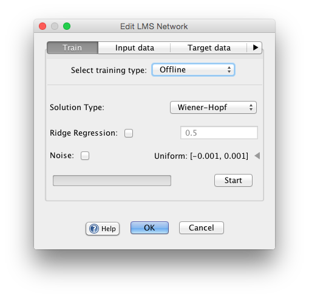

Least Mean Squares Offline
The offline LMS rule a non-iterative method for computing a weight matrix for associating input vectors and target vectors in a dataset. [link to training set] in a training
Note for this algorithm you have to make sure the output node range is greater than the range of the target values. Also it sometimes it helps to change output nodes to linear.
Training Type: Wiener-Hopf: The wiener-hopf method for lms offline.
Training Type: Moore-Penrose: The moore penrose method for lms offline. Moore-Penrose is stable in some cases when Winer Hopf is not.
Ridge regression, Noise: Ridge regression and adding noise help when a matrix that is rank deficient. Prevents over-fitting, makes rank slightly higher.